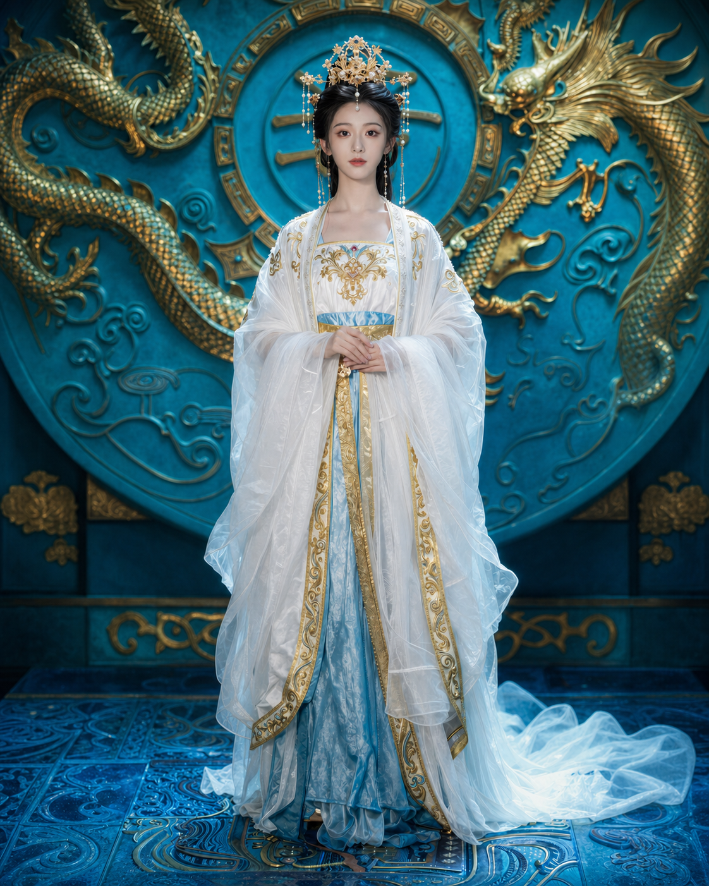

雨夜霓虹街头 · 分镜设定
主角在霓虹雨幕中回头，镜头从街面水光推到眼神特写，随后切入手部道具和追踪者剪影。
第一幕 · 被跟踪的人
- 人物：少年主角、隐藏追踪者、远处路人。
- 冲突：主角确认自己被跟踪，却不能暴露手中的关键道具。
- 节奏：慢推进、强反差光、结尾留悬念。
分镜建议
- 街面水光与鞋步特写，建立雨夜压迫感。
- 镜头抬升到主角回头，霓虹在眼神中闪过。
- 切入手部道具，再带出远处追踪者剪影。

主角在霓虹雨幕中回头，镜头从街面水光推到眼神特写，随后切入手部道具和追踪者剪影。
凤冠神女立于深红宫门前，繁复凤冠由金色花丝、珍珠与流苏层层构成，金色逆光沿人物轮廓向外扩散。她身着白金刺绣长袍，衣摆垂落在青蓝石阶上，背后盘龙浮雕与冷色宫墙形成强烈对比。画面采用低机位全身构图，保留衣料纹理、金属高光和轻微薄雾，整体呈现庄重、神秘且具有东方史诗感的电影人物海报。